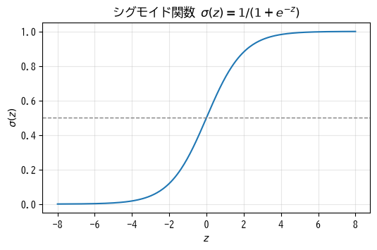
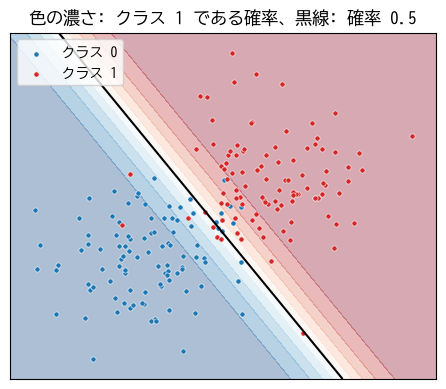
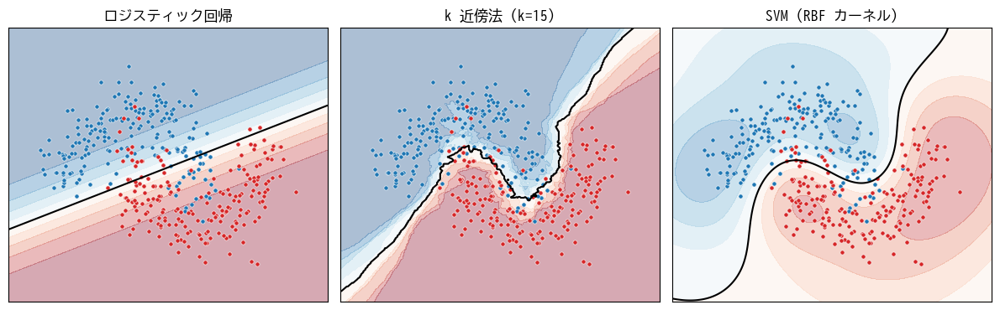

5. 分類
この章では、教師あり学習のうち、カテゴリを予測する分類を扱う。まず 2 クラスの分類を行うロジスティック回帰を題材に、分類のための損失関数を説明する。その後、多クラスへの拡張と、k 近傍法、サポートベクターマシンという性質の異なる手法を紹介する。決定木にもとづく手法は第 7 章で扱う。
5.1. 2 値分類とロジスティック回帰
2 つのクラスのどちらに属するかを予測する問題を 2 値分類と呼ぶ。2 つのクラスを 0 と 1 で表し、たとえば「迷惑メールなら 1、通常のメールなら 0」のようにする。慣習として、検出したい方（迷惑メール、病気あり、不正利用など）をクラス 1（陽性）、そうでない方をクラス 0（陰性）とすることが多い。
5.1.1. シグモイド関数
分類では、「クラス 1 である確率」を出力するモデルが便利である。確率が分かれば、「確率が 0.5 以上ならクラス 1 と判定する」のように使えるだけでなく、判定の確からしさも分かる。
線形回帰の出力 \(z = \boldsymbol{w}^\top \boldsymbol{x} + b\) は任意の実数値を取るため、そのままでは確率として使えない。そこで、任意の実数を 0〜1 の範囲に変換するシグモイド関数を使う（図 5.1）。


図 5.1 シグモイド関数。\(z = 0\) のとき 0.5 となり、\(z\) が大きいほど 1 に、小さいほど 0 に近づく。
ロジスティック回帰は、線形回帰の出力をシグモイド関数に通して、クラス 1 である確率を予測するモデルである。
名前に「回帰」と付いているが、分類のための手法である。シグモイド関数に入力する前の値 \(z\) はロジットと呼ばれる。
5.1.2. 決定境界
確率 0.5 をしきい値として判定する場合、\(\sigma(z) \geq 0.5\) は \(z \geq 0\) と同じであるから、
がクラスを分ける境界になる。このように、特徴量の空間をクラスごとの領域に分ける境界を決定境界と呼ぶ。ロジスティック回帰の決定境界は、特徴量が 2 つなら直線、3 つなら平面になる（図 5.2）。決定境界が直線（平面）になるモデルを線形分類器と呼ぶ。


図 5.2 ロジスティック回帰による 2 値分類。決定境界から離れるほど、予測の確率が 0 または 1 に近づく。
5.2. 交差エントロピー
ロジスティック回帰の学習に使う損失関数を考える。正解が \(y = 1\) のときは予測確率 \(p\) が大きいほど良く、\(y = 0\) のときは \(p\) が小さいほど良い。これを 1 つの式で表したものが 2 値交差エントロピーである。
\(y_i = 1\) のサンプルでは第 1 項 \(-\log p_i\) だけが残り、\(y_i = 0\) のサンプルでは第 2 項 \(-\log(1 - p_i)\) だけが残る。たとえば正解が 1 のとき、予測確率が 0.9 なら損失は \(-\log 0.9 \approx 0.11\) と小さいが、0.01 なら \(-\log 0.01 \approx 4.6\) と大きくなる。自信を持って間違えるほど、大きな罰が与えられる。
交差エントロピーは、第 2 章で説明した最尤推定から導かれる損失関数である。分類に平均二乗誤差を使うこともできなくはないが、シグモイド関数と組み合わせると、大きく間違えているときに勾配がかえって小さくなり、学習が進みにくい。
交差エントロピーの勾配は、連鎖律を使って計算すると次のような簡単な形になる。
これは、第 4 章で求めた線形回帰の勾配と（定数倍を除いて）同じ形であり、「予測と正解の差」×「特徴量」の平均になっている。
5.3. ロジスティック回帰の実装
勾配降下法によるロジスティック回帰を NumPy で実装すると次のようになる。
1def fit(x: FloatArray, y: FloatArray, lr: float = 0.5, epochs: int = 1000) -> tuple[FloatArray, float]:
2 """重み w とバイアス b を勾配降下法で学習する。"""
3 n, d = x.shape
4 w = np.zeros(d)
5 b = 0.0
6 for epoch in range(epochs):
7 p = sigmoid(x @ w + b)
8 # 交差エントロピーをシグモイドの入力で微分すると (p - y) という単純な形になる
9 error = p - y
10 w -= lr * (x.T @ error) / n
11 b -= lr * float(np.mean(error))
12 if epoch % 200 == 0:
13 print(f"epoch {epoch:4d}: loss = {binary_cross_entropy(y, p):.4f}")
14 return w, b
7 行目で各サンプルがクラス 1 である確率を計算している。
9〜11 行目で、上の式に従って勾配を求め、パラメータを更新している。
2 つの正規分布から生成した 2 次元のデータで学習した結果を次に示す。損失が減少し、訓練データの 92.5 % を正しく分類できている。
1epoch 0: loss = 0.6931
2epoch 200: loss = 0.1622
3epoch 400: loss = 0.1620
4epoch 600: loss = 0.1620
5epoch 800: loss = 0.1620
6w = [2.48954831 1.67846907], b = -0.555
7訓練データでの正解率 = 0.925
8点 (0.0, 0.5) がクラス 1 である確率: [0.57046278]
最初の損失 0.6931 は \(-\log 0.5\) に等しい。パラメータがすべて 0 の状態では、どのサンプルに対しても確率 0.5 を出力するためである。
サンプルコードの全体は ch05_logistic_regression_scratch.py からダウンロードできる。
5.4. 多クラス分類
3 つ以上のクラスから 1 つを選ぶ問題を多クラス分類と呼ぶ。手書き数字の認識（0〜9 の 10 クラス）などが代表例である。
5.4.1. ソフトマックス関数
\(K\) クラスの分類では、クラスごとに重みベクトル \(\boldsymbol{w}_k\) とバイアス \(b_k\) を用意し、各クラスのスコア（ロジット）\(z_k = \boldsymbol{w}_k^\top \boldsymbol{x} + b_k\) を計算する。そして、ソフトマックス関数で各クラスの確率に変換する。
ソフトマックス関数の出力はすべて正で、合計は 1 になる。また、スコアの大小関係は保たれるので、スコアが最大のクラスが確率も最大になる。2 クラスの場合、ソフトマックス関数はシグモイド関数と同じ働きをする。
ソフトマックス関数を実装するときは、\(e^{z_k}\) がオーバーフローしないように、すべての \(z_k\) から最大値を引いてから計算する。この操作は結果を変えない（第 12 章のサンプルコードを参照）。
5.4.2. 多クラスの交差エントロピー
多クラス分類の損失関数には、正解クラスの予測確率の対数にマイナスを付けた交差エントロピーを使う。
ここで \(p_{i, y_i}\) は、\(i\) 番目のサンプルの正解クラス \(y_i\) に対する予測確率である。正解ラベルを、正解クラスだけが 1 で他が 0 のベクトル（one-hot 符号化した表現）\(\boldsymbol{t}_i\) で表すと、\(L = -\frac{1}{n} \sum_i \sum_k t_{ik} \log p_{ik}\) とも書ける。この「ソフトマックス関数 + 交差エントロピー」の組み合わせは、深層学習の分類でも標準的に使われる（第 9 章）。
5.5. k 近傍法
k 近傍法（k-Nearest Neighbors、k-NN）は、新しいデータを分類するとき、訓練データの中から距離が近い \(k\) 個のサンプルを探し、その多数決でクラスを決める手法である。
学習時には訓練データを記憶するだけで、パラメータの最適化は行わない。
\(k\) が小さいと決定境界が複雑になり、ノイズの影響を受けやすい。\(k\) が大きいと境界が滑らかになる。
距離にもとづくため、特徴量の標準化が必要である。
予測のたびに全訓練データとの距離を計算するため、データが多いと予測が遅い。また、特徴量の次元が高いと、どのサンプルも同じくらい遠くなってしまい、うまく機能しない（次元の呪い）。
仕組みが単純で直感的に理解しやすいため、他の手法と比較する基準（ベースライン）として使われることが多い。
5.6. サポートベクターマシン
5.6.1. マージン最大化
サポートベクターマシン（Support Vector Machine、SVM）は、2 つのクラスを分ける決定境界のうち、境界に最も近いサンプルまでの距離（マージン）が最大になるものを選ぶ手法である。マージンが大きいほど、少しずれた位置に新しいデータが来ても正しく分類できると期待できる。境界に最も近く、境界の位置を決めているサンプルをサポートベクターと呼ぶ。
実際のデータは完全には分離できないことが多いため、一部のサンプルがマージンの内側に入ったり誤分類されたりすることを許す。どの程度許すかをハイパーパラメータ \(C\) で調整する。\(C\) が大きいほど誤分類を厳しく罰し、訓練データに合わせようとする。
5.6.2. カーネル法
SVM の大きな特徴は、カーネル法によって非線形な決定境界を学習できることである。第 4 章の多項式回帰では、特徴量を変換して増やすことで曲線を表現した。カーネル法は、この「特徴量を高次元の空間に変換してから線形に分離する」ことを、変換後の特徴量を明示的に計算せずに行う技法である。
よく使われる RBF カーネル（ガウスカーネル）では、サンプル間の類似度を距離にもとづいて測り、複雑な曲線の決定境界を作れる。ハイパーパラメータ \(\gamma\) は 1 つのサンプルの影響が及ぶ範囲を決め、大きいほど境界が複雑になる。
SVM はデータが数千〜数万件程度までの問題で高い性能を示すが、データ数が多くなると学習に時間がかかる。また、特徴量の標準化が必要である。
5.7. 手法の比較
三日月形の 2 クラスデータに 3 つの手法を適用したときの決定境界を図 5.3 に示す。

図 5.3 ロジスティック回帰、k 近傍法、SVM（RBF カーネル）の決定境界
ロジスティック回帰は線形分類器なので、決定境界は直線になり、三日月形を分離しきれない。k 近傍法と SVM は曲線の境界を学習できる。
次のサンプルは、scikit-learn で 3 つの手法を学習し、テストデータでの正解率を比較する。
1def main() -> None:
2 x, y = make_moons(n_samples=400, noise=0.25, random_state=0)
3 x_train, x_test, y_train, y_test = train_test_split(x, y, test_size=0.25, random_state=0)
4
5 # 距離や内積を使う手法は特徴量のスケールに敏感なので、標準化と組み合わせる
6 models: dict[str, Any] = {
7 "ロジスティック回帰": make_pipeline(StandardScaler(), LogisticRegression()),
8 "k 近傍法 (k=15)": make_pipeline(StandardScaler(), KNeighborsClassifier(n_neighbors=15)),
9 "SVM (RBF カーネル)": make_pipeline(StandardScaler(), SVC(kernel="rbf", C=1.0, gamma="scale")),
10 }
11
12 for name, model in models.items():
13 model.fit(x_train, y_train)
14 print(f"{name}: テストデータでの正解率 = {model.score(x_test, y_test):.3f}")
15
16 # predict_proba で各クラスの確率を得られる
17 proba = models["ロジスティック回帰"].predict_proba(x_test[:3])
18 print("ロジスティック回帰による先頭 3 件のクラス確率:\n", proba.round(3))
6〜10 行目で、各手法を
StandardScalerによる標準化と組み合わせたパイプラインを作っている。12〜14 行目で各モデルを学習し、
scoreメソッドでテストデータでの正解率を求めている。17 行目の
predict_probaは、各クラスの確率を返す。
1ロジスティック回帰: テストデータでの正解率 = 0.900
2k 近傍法 (k=15): テストデータでの正解率 = 0.930
3SVM (RBF カーネル): テストデータでの正解率 = 0.910
4ロジスティック回帰による先頭 3 件のクラス確率:
5 [[0.966 0.034]
6 [0.106 0.894]
7 [0.031 0.969]]
この例では線形分類器のロジスティック回帰でも 90 % の正解率が得られているが、境界付近のサンプルを取りこぼしている。どの手法が最も良いかはデータによって異なるため、実際には複数の手法を検証データで比較して選ぶ。比較のときの注意点は第 6 章で説明する。
サンプルコードの全体は ch05_classifiers_sklearn.py からダウンロードできる。
手法 |
長所 |
短所 |
主なハイパーパラメータ |
|---|---|---|---|
ロジスティック回帰 |
高速。確率を出力する。重みから特徴量の影響を解釈しやすい。 |
決定境界が線形に限られる。 |
正則化の強さ（第 6 章） |
k 近傍法 |
仕組みが単純。学習が不要。 |
予測が遅い。高次元に弱い。 |
近傍の数 \(k\) |
SVM |
カーネル法で複雑な境界を学習できる。中規模のデータで高性能。 |
大規模データでは学習が遅い。確率を直接は出力しない。 |
\(C\)、カーネルの種類、\(\gamma\) |
5.8. まとめ
ロジスティック回帰は、線形の式をシグモイド関数に通して、クラス 1 である確率を予測する。
分類の損失関数には交差エントロピーを使う。自信を持って間違えるほど損失が大きくなる。
多クラス分類では、ソフトマックス関数で各クラスの確率を求め、交差エントロピーで学習する。
k 近傍法は近いサンプルの多数決で分類し、SVM はマージンが最大になる境界を求める。いずれも特徴量の標準化が必要である。